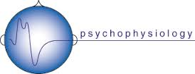

PEPSC

We are looking for healthy, typically-developing children
to participate in a study of natural body responses (e.g., heart rate) during games and conversations.
Eligible participants are children 6-13 years old Families will receive $100 for completing our measures.
Children selected for the study will watch videos and play games at our lab. At the same time, we will measure their natural body responses to our activities, such as heart rate and skin conductance. Parents will be asked to fill out questionnaires while their child completes our activities.
Click here to download our flyer.
For more information, please contact us at: (310) 206-2586 or childstudy@gseis.ucla.edu.